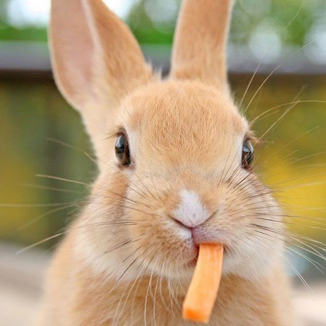

Что едят кролики?
Основу рациона кроликов составляют зеленые части растений, а меню образовано доступными
кормами. Помимо трав в пищу идут дикие и культурные злаки, капуста, салат, корнеплоды,
иногда мелкие насекомые. Зимний рацион включает кору и ветки деревьев, подземные части
растений, которые удается достать из-под снега. При отсутствии кормов кролики практикуют
копрофагию — поедание собственных фекалий.
Питание в домашних условиях
Основу рациона домашнего кролика составляют сено, которого всегда должно быть много,
комбикорм и вода. Дополнительный корм для декоративных кроликов может состоять из различных
трав: ромашка, мышиный горошек, люцерна, звездчатка, тысячелистник, крапива, пырей, одуванчик
и цикорий. Следует избегать трав, содержащих эфирные масла, таких, как укроп и петрушка.
Домашние кролики с удовольствием едят все разновидности капусты, ботву редиса и свеклы, не
откажутся полакомиться свежим кабачком, огурцом, яблоком или морковкой, с аппетитом будут
хрустеть белым сухариком, арбузной коркой или дыней. А вот экзотическими фруктами ушастого
питомца кормить не следует.
